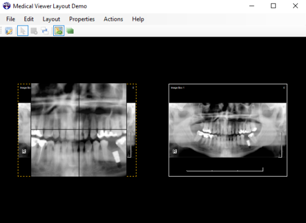

Medical Viewer Layout Demo
Demonstrates the customized layout support for DICOM/Medical image display functionality.
Create, edit, and save custom layouts
Preview layout with image data
Interactive actions: WindowLevel, Pan, Zoom, Magnify Glass
